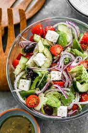

Greek Salad

A Refreshing Summer Greek Salad
Greek salad is a traditional Mediterranean dish. It is a staple in Greek cuisine and is often served as a light, refreshing side salad or as a main dish with the addition of grilled meats or seafood.
Ingredients
- 2 medium-sized tomatoes, chopped
- 1 cucumber, chopped
- 1 red onion, thinly sliced
- 1 green bell pepper, chopped
- 115g crumbled feta cheese
- 90g Kalamata olives
- 2 tablespoons olive oil
- 1 lemon, juiced
- Salt and pepper to taste
- Fresh oregano or basil leaves (optional)
Steps
- In a large bowl, combine the chopped tomatoes, cucumber, red onion, and green bell pepper.
- Add the crumbled feta cheese and Kalamata olives to the bowl and gently mix.
- In a small bowl, whisk together the olive oil and lemon juice.
- Pour the dressing over the vegetables and cheese, and season with salt and pepper to taste.
- Toss everything together until the ingredients are evenly coated with the dressing.
- If desired, garnish with fresh oregano or basil leaves.
Serve and enjoy!